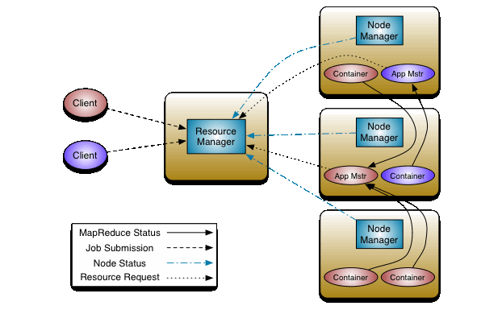
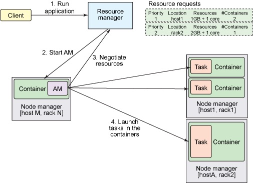

Hadoop Yarn
YARN 初识
Apache Hadoop YARN 是开源 Hadoop 分布式处理框架中的资源管理和作业调度技术。作为 Apache Hadoop 的核心组件之一，YARN 负责将系统资源分配给在 Hadoop 集群中运行的各种应用程序，并调度要在不同集群节点上执行的任务。
YARN 的基本思想是将资源管理和作业调度/监视的功能分解为单独的 daemon(守护进程)，其拥有一个全局 ResourceManager(RM) 和每个应用程序的 ApplicationMaster(AM)。应用程序可以是单个作业，也可以是作业的 DAG。
ResourceManager和 NodeManager构成了数据计算框架。 ResourceManager 是在系统中的所有应用程序之间仲裁资源的最终权限。NodeManager 是每台机器框架代理，负责 Containers，监视其资源使用情况（CPU，内存，磁盘，网络）并将其报告给 ResourceManager。
每个应用程序 ApplicationMaster 实际上是一个框架特定的库，其任务是协调来自 ResourceManager 的资源，并与 NodeManager 一起执行和监视任务。
YARN 体系结构
在 YARN 体系结构中，ResourceManager 作为守护程序运行，作为架构中的全局的 master 角色，通常在专用计算机上运行，它在各种竞争应用程序之间仲裁可用的群集资源。ResourceManager 跟踪群集上可用的活动节点和资源的数量，并协调用户提交的应用程序应获取哪些资源以及事件。ResourceManager 是具有此信息的单个进程，因此它可以以共享，安全和多租户的方式进行调度决策（例如，根据应用程序优先级，队列容量，ACL，数据位置等）。
当用户提交应用程序时，将启动名为 ApplicationMaster 的轻量级进程实例，以协调应用程序中所有任务的执行。这包括监视任务，重新启动失败的任务，推测性地运行慢速任务以及计算应用程序计数器的总值。ApplicationMaster 和属于其应用程序的任务在 NodeManagers 控制的资源容器中运行。
NodeManager 有许多动态创建的资源容器。容器的大小取决于它包含的资源量，例如内存、CPU、磁盘和网络IO。目前，仅支持内存和CPU。节点上的容器数是配置参数和用于守护程序及OS的资源之外的节点资源总量（例如总CPU和总内存）的乘积。
ApplicationMaster 可以在容器内运行任何类型的任务。例如，MapReduce ApplicationMaster 请求容器启动 map 或 reduce 任务，而 Giraph ApplicationMaster 请求容器运行 Giraph 任务。您还可以实现运行特定任务的自定义 ApplicationMaster
在 YARN 中，MapReduce 简单地降级为分布式应用程序的角色（但仍然是非常流行且有用的），现在称为MRv2。
此外，YARN 通过 ReservationSystem 支持资源预留的概念，ReservationSystem 允许用户通过配置文件来指定资源的时间和时间约束（例如，截止日期）的，并保留资源以确保重要作业的可预测执行。ReservationSystem 可跟踪资源超时，执行预留的准入控制，并动态指示基础调度程序确保预留已满。
YARN 基本服务组件
YARN 总体上是 master/slave 结构，在整个资源管理框架中，ResourceManager 为 master，NodeManager 是 slave。
YARN的基本组成结构，YARN 主要由 ResourceManager、NodeManager、ApplicationMaster 和 Container 等几个组件构成。
- ResourceManager是Master上一个独立运行的进程，负责集群统一的资源管理、调度、分配等等；
- NodeManager是Slave上一个独立运行的进程，负责上报节点的状态；
- ApplicationMaster相当于这个Application的监护人和管理者，负责监控、管理这个Application的所有Attempt在cluster中各个节点上的具体运行，同时负责向Yarn ResourceManager申请资源、返还资源等；
- Container是yarn中分配资源的一个单位，包涵内存、CPU等等资源，YARN以Container为单位分配资源；
ResourceManager 负责对各个 NadeManager 上资源进行统一管理和调度。当用户提交一个应用程序时，需要提供一个用以跟踪和管理这个程序的 ApplicationMaster，它负责向 ResourceManager 申请资源，并要求 NodeManger 启动可以占用一定资源的任务。由于不同的 ApplicationMaster 被分布到不同的节点上，因此它们之间不会相互影响。
Client 向 ResourceManager 提交的每一个应用程序都必须有一个 ApplicationMaster，它经过 ResourceManager 分配资源后，运行于某一个 Slave 节点的 Container 中，具体做事情的 Task，同样也运行与某一个 Slave 节点的 Container 中。
2.1 ResourceManager
RM是一个全局的资源管理器，集群只有一个，负责整个系统的资源管理和分配，包括处理客户端请求、启动/监控 ApplicationMaster、监控 NodeManager、资源的分配与调度。它主要由两个组件构成：调度器（Scheduler）和应用程序管理器（Applications Manager，ASM）。
（1） 调度器
调度器根据容量、队列等限制条件（如每个队列分配一定的资源，最多执行一定数量的作业等），将系统中的资源分配给各个正在运行的应用程序。需要注意的是，该调度器是一个“纯调度器”，它从事任何与具体应用程序相关的工作，比如不负责监控或者跟踪应用的执行状态等，也不负责重新启动因应用执行失败或者硬件故障而产生的失败任务，这些均交由应用程序相关的ApplicationMaster完成。
调度器仅根据各个应用程序的资源需求进行资源分配，而资源分配单位用一个抽象概念“资源容器”（Resource Container，简称Container）表示，Container是一个动态资源分配单位，它将内存、CPU、磁盘、网络等资源封装在一起，从而限定每个任务使用的资源量。
（2） 应用程序管理器
应用程序管理器主要负责管理整个系统中所有应用程序，接收job的提交请求，为应用分配第一个 Container 来运行 ApplicationMaster，包括应用程序提交、与调度器协商资源以启动 ApplicationMaster、监控 ApplicationMaster 运行状态并在失败时重新启动它等。
2.2 ApplicationMaster
管理 YARN 内运行的一个应用程序的每个实例。关于 job 或应用的管理都是由 ApplicationMaster 进程负责的，Yarn 允许我们以为自己的应用开发 ApplicationMaster。
功能：
- 数据切分；
- 为应用程序申请资源并进一步分配给内部任务（TASK）；
- 任务监控与容错；
- 负责协调来自ResourceManager的资源，并通过NodeManager监视容易的执行和资源使用情况。
可以说，ApplicationMaster 与 ResourceManager 之间的通信是整个 Yarn 应用从提交到运行的最核心部分，是 Yarn 对整个集群进行动态资源管理的根本步骤，Yarn 的动态性，就是来源于多个Application 的 ApplicationMaster 动态地和 ResourceManager 进行沟通，不断地申请、释放、再申请、再释放资源的过程。
2.3 NodeManager
NodeManager 整个集群有多个，负责每个节点上的资源和使用。
NodeManager 是一个 slave 服务：它负责接收 ResourceManager 的资源分配请求，分配具体的 Container 给应用。同时，它还负责监控并报告 Container 使用信息给 ResourceManager。通过和ResourceManager 配合，NodeManager 负责整个 Hadoop 集群中的资源分配工作。
功能：NodeManager 本节点上的资源使用情况和各个 Container 的运行状态（cpu和内存等资源）
- 接收及处理来自 ResourceManager 的命令请求，分配 Container 给应用的某个任务；
- 定时地向RM汇报以确保整个集群平稳运行，RM 通过收集每个 NodeManager 的报告信息来追踪整个集群健康状态的，而 NodeManager 负责监控自身的健康状态；
- 处理来自 ApplicationMaster 的请求；
- 管理着所在节点每个 Container 的生命周期；
- 管理每个节点上的日志；
- 执行 Yarn 上面应用的一些额外的服务，比如 MapReduce 的 shuffle 过程；
当一个节点启动时，它会向 ResourceManager 进行注册并告知 ResourceManager 自己有多少资源可用。在运行期，通过 NodeManager 和 ResourceManager 协同工作，这些信息会不断被更新并保障整个集群发挥出最佳状态。
NodeManager 只负责管理自身的 Container，它并不知道运行在它上面应用的信息。负责管理应用信息的组件是 ApplicationMaster
2.4 Container
Container 是 YARN 中的资源抽象，它封装了某个节点上的多维度资源，如内存、CPU、磁盘、网络等，当 AM 向 RM 申请资源时，RM 为 AM 返回的资源便是用 Container 表示的。YARN 会为每个任务分配一个 Container，且该任务只能使用该 Container 中描述的资源。
Container 和集群节点的关系是：一个节点会运行多个 Container，但一个 Container 不会跨节点。任何一个 job 或 application 必须运行在一个或多个 Container 中，在 Yarn 框架中，ResourceManager 只负责告诉 ApplicationMaster 哪些 Containers 可以用，ApplicationMaster 还需要去找 NodeManager 请求分配具体的 Container。
需要注意的是，Container 是一个动态资源划分单位，是根据应用程序的需求动态生成的。目前为止，YARN 仅支持 CPU 和内存两种资源，且使用了轻量级资源隔离机制 Cgroups 进行资源隔离。
功能：
- 对task环境的抽象；
- 描述一系列信息；
- 任务运行资源的集合（cpu、内存、io等）；
- 任务运行环境
YARN 应用提交过程
Application在Yarn中的执行过程，整个执行过程可以总结为三步：
- 应用程序提交
- 启动应用的ApplicationMaster实例
- ApplicationMaster 实例管理应用程序的执行

具体提交过程为：
- 客户端程序向 ResourceManager 提交应用并请求一个 ApplicationMaster 实例；
- ResourceManager 找到一个可以运行一个 Container 的 NodeManager，并在这个 Container 中启动 ApplicationMaster 实例；
- ApplicationMaster 向 ResourceManager 进行注册，注册之后客户端就可以查询 ResourceManager 获得自己 ApplicationMaster 的详细信息，以后就可以和自己的 ApplicationMaster 直接交互了（这个时候，客户端主动和 ApplicationMaster 交流，应用先向 ApplicationMaster 发送一个满足自己需求的资源请求）；
- 在平常的操作过程中，ApplicationMaster 根据
resource-request协议向 ResourceManager 发送resource-request请求； - 当 Container 被成功分配后，ApplicationMaster 通过向 NodeManager 发送
container-launch-specification信息来启动Container，container-launch-specification信息包含了能够让Container 和 ApplicationMaster 交流所需要的资料； - 应用程序的代码以 task 形式在启动的 Container 中运行，并把运行的进度、状态等信息通过
application-specific协议发送给ApplicationMaster； - 在应用程序运行期间，提交应用的客户端主动和 ApplicationMaster 交流获得应用的运行状态、进度更新等信息，交流协议也是
application-specific协议； - 一旦应用程序执行完成并且所有相关工作也已经完成，ApplicationMaster 向 ResourceManager 取消注册然后关闭，用到所有的 Container 也归还给系统。
精简版的：

image
- 步骤1：用户将应用程序提交到 ResourceManager 上；
- 步骤2：ResourceManager 为应用程序 ApplicationMaster 申请资源，并与某个 NodeManager 通信启动第一个 Container，以启动ApplicationMaster；
- 步骤3：ApplicationMaster 与 ResourceManager 注册进行通信，为内部要执行的任务申请资源，一旦得到资源后，将于 NodeManager 通信，以启动对应的 Task；
- 步骤4：所有任务运行完成后，ApplicationMaster 向 ResourceManager 注销，整个应用程序运行结束。